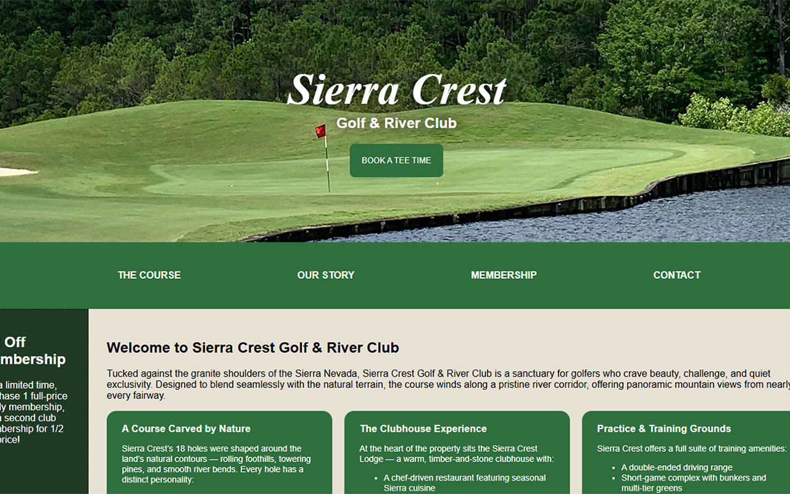

Sierra Crest Golf & River Club
Project Context
This project began as a lightweight exploration of motion‑driven hero sections for modern landing pages. The goal was to prototype a visually engaging background that could serve as a foundation for future hero layouts in branding, wellness, or tech‑focused websites. The emphasis was on creating atmosphere without overwhelming the content layered on top.
Requirements
- Create a smooth, looping animated gradient background
- Keep the code minimal and modular for reuse in future projects
- Ensure the animation performs well across browsers
- Center hero text cleanly without layout shifts
- Avoid heavy libraries or unnecessary dependencies
Approach
I built the layout using a single-container structure with a full‑viewport flexbox wrapper to keep the hero text perfectly centered. The animated background uses CSS keyframes to transition between multiple color stops, creating a soft, organic motion effect.
The design philosophy was: lightweight, reusable, and visually expressive.
I also separated concerns clearly — animation in CSS, structure in HTML — so the component can drop into any project without modification.
Tech Stack Used
- HTML5 — semantic structure for the hero container and text
- CSS3 — gradient animation, keyframes, flexbox centering, fade‑in effects
- No JavaScript — intentionally kept dependency‑free for performance and portability
Challenges Overcome
-
Smoothing the gradient transitions
Early versions had harsh color jumps. I refined the keyframe timing and added intermediate color stops to create a more fluid motion. -
Preventing banding on large screens
I adjusted the gradient angle and color distribution to reduce visible banding on 4K displays. -
Balancing animation intensity with readability
The background needed to feel alive without distracting from the centered text. I tuned opacity, saturation, and animation duration to hit the right balance.
Outcome
The final result is a clean, atmospheric hero concept that demonstrates motion design, color theory, and modular layout thinking. It serves as a reusable building block for future landing pages and showcases my ability to create visually rich components with minimal code.